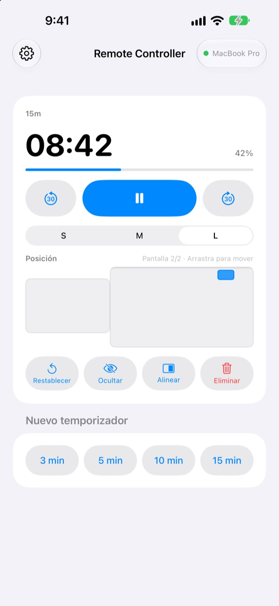
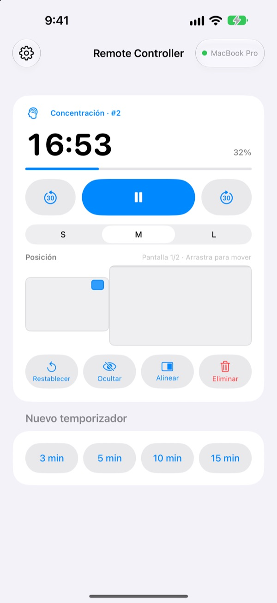
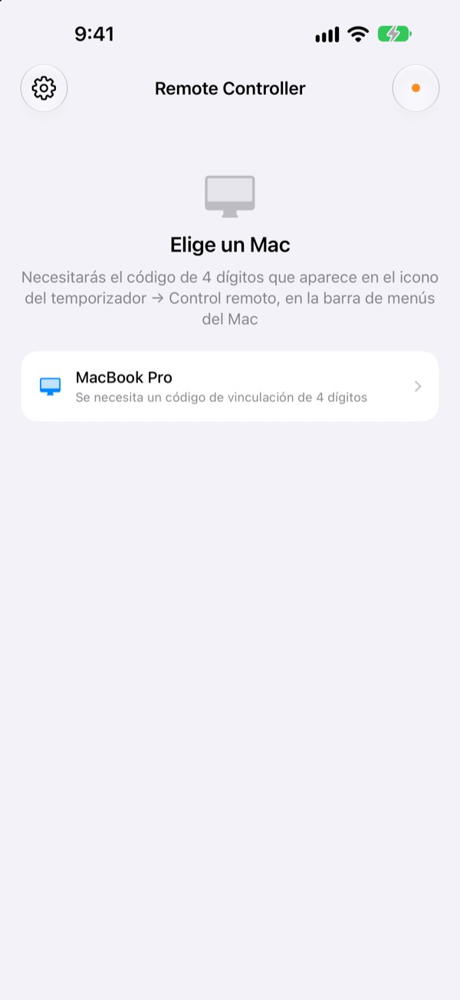

Aléjate del Mac.
El tiempo, en tu mano.
Controla desde el iPhone los temporizadores de StickyPresenter en tu Mac. Sal al frente de la sala y sigue viendo el tiempo restante, pausa, suma 30 segundos o aparta el temporizador del gráfico que está tapando.
Gratis · iOS 17 o posterior · Necesita un Mac con StickyPresenter abierto en la misma red Wi‑Fi.

¿Sigues volviendo al portátil para tocar el temporizador?
La charla se alarga y necesitas más tiempo. El temporizador está justo encima de tu mejor gráfico. Hasta ahora, eso suponía cruzar el escenario y buscar el trackpad delante de todos. Con Remote Controller te quedas donde estás y tocas el iPhone una vez.
Mira el tiempo restante y corrígelo al momento
El tiempo restante y el progreso se actualizan cada segundo. En un Pomodoro ves además si toca Concentración o Descanso y en qué ciclo vas.
¿Te alargas? Suma 30 segundos. ¿Acabas antes? Resta 30. Inicia un temporizador nuevo de 3, 5, 10 o 15 minutos con un toque y cambia el widget entre S, M y L para que se lea desde la última fila.

Introduce el código una vez y listo
Abre la app y verás en una lista cada Mac de tu red Wi‑Fi que tenga StickyPresenter abierto. Elige el tuyo y escribe el código de cuatro dígitos que aparece en el icono del temporizador ▸ Control remoto, en la barra de menús del Mac.
A partir de ahí, la app se conecta sola a ese Mac cada vez que la abres. Sin cuenta ni servidor: los dos dispositivos se comunican directamente por tu red local.

Listo en tres pasos
- 1
Abre StickyPresenter en tu Mac
Si ves el icono del temporizador en la barra de menús, ya está. La app sigue ahí aunque cierres todas sus ventanas.
- 2
Abre la app en la misma red Wi‑Fi
Cuando te pida acceso a la red local, toca Permitir. Así encuentra tu Mac.
- 3
Elige tu Mac e introduce el código
Escribe el código de vinculación de cuatro dígitos del icono del temporizador ▸ Control remoto, en la barra de menús del Mac, y ya tienes el control.
Qué puedes hacer desde el iPhone
- Tiempo restante
- Tiempo que queda, progreso, fase del Pomodoro (Concentración o Descanso) y número de ciclo, cada segundo
- Iniciar · Pausar
- Un solo botón grande en el centro
- −30 s · +30 s
- Los botones de los lados ajustan al instante un temporizador en marcha
- Nuevo temporizador
- 3, 5, 10 o 15 minutos
- Tamaño
- Widget en S, M o L
- Posición
- Arrástralo sobre una miniatura de la disposición de pantallas del Mac, incluso hasta una pantalla extendida
- Ocultar
- Oculta el widget al público un momento
- Alinear
- Trae un widget perdido de vuelta junto a la ventana del temporizador
- Restablecer · Eliminar
- Vuelve a empezar el temporizador o lo quita
- Atajos · Siri
- Di
Inicia un temporizador con Remote Controllerpara poner un temporizador en el Mac
El mando solo funciona con los temporizadores que corren en el Mac. Las notas adhesivas y los guiones del teleprompter nunca se envían al iPhone, y no sirve para pasar diapositivas.
Preguntas frecuentes
¿Puedo usar la app del iPhone por sí sola?
No. Remote Controller es el mando de StickyPresenter para Mac, así que StickyPresenter tiene que estar abierto en un Mac de la misma red Wi‑Fi. Consigue la app del Mac en el enlace de abajo o en Descargar la app del Mac, dentro de los Ajustes de la app.
Mi Mac no aparece en la lista.
Si a los 10 segundos no aparece ningún Mac, la app muestra una lista de comprobación. Repásala de arriba abajo: StickyPresenter está abierto en el Mac (busca el icono del temporizador en la barra de menús), los dos dispositivos están en la misma red Wi‑Fi (las redes de invitados no sirven), Remote Controller está activado en Ajustes ▸ Privacidad y seguridad ▸ Red local del iPhone, StickyPresenter está permitido en Ajustes del Sistema ▸ Privacidad y seguridad ▸ Red local del Mac y no hay ninguna VPN activada.
Dice que el código de vinculación es incorrecto.
Introduce los cuatro dígitos que aparecen ahora mismo en el icono del temporizador ▸ Control remoto, en la barra de menús del Mac. Si alguien pulsó Nuevo código de vinculación en el Mac, solo vale el código nuevo.
Dice que el Mac ya no reconoce este iPhone.
Ocurre después de usar Olvidar controles remotos vinculados en el Mac o de reinstalar StickyPresenter. Toca el Mac en la lista e introduce el código de vinculación otra vez.
Dice que el Mac no responde.
Comprueba que el Mac no esté en reposo, que los dos dispositivos estén en la misma red Wi‑Fi y que no haya ninguna VPN activada.
Dice que la app del Mac necesita una actualización.
StickyPresenter en tu Mac es más antiguo que el mando. Actualízalo desde la Mac App Store y vuelve a elegir el Mac.
¿Es seguro en una sala de reuniones llena de Mac?
Sí. El mando solo habla con el Mac con el que está vinculado, y un mando que no conoce tu código no puede llegar a tu Mac. Todo viaja por una conexión directa y cifrada dentro de la misma red. Si alguna vez le enseñaste tu código a alguien, pulsa Nuevo código de vinculación en el Mac.
¿Qué sale a internet?
Tus temporizadores y órdenes nunca salen de tu red local. Lo único que se envía por internet son estadísticas de uso anónimas, informes de fallos y los comentarios que decidas enviar. La política de privacidad lo explica en detalle.
¿Puede Siri poner un temporizador justo antes de salir a hablar?
Sí. Di «Inicia un temporizador con Remote Controller» o usa la acción Iniciar temporizador en el Mac de Atajos. La app se abre y, en cuanto se conecta al Mac, inicia un temporizador de la duración que elegiste (de 1 a 600 minutos).
¿Dudas, errores o ideas? Escribe a mizzking75@gmail.com o envíalos directamente desde el iPhone en la rueda dentada de arriba a la izquierda de la app ▸ Comentarios.